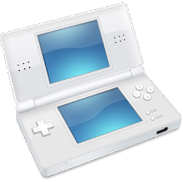

Untuk bermain GBA/NDS dalam PC, kita membutuhkan ROM dan emulator. No$ emulator merupakan salah satu emulator yang dapat diandalkan. bahkan, Anda

World Game

Untuk bermain GBA/NDS dalam PC, kita membutuhkan ROM dan emulator. No$ emulator merupakan salah satu emulator yang dapat diandalkan. bahkan, Anda